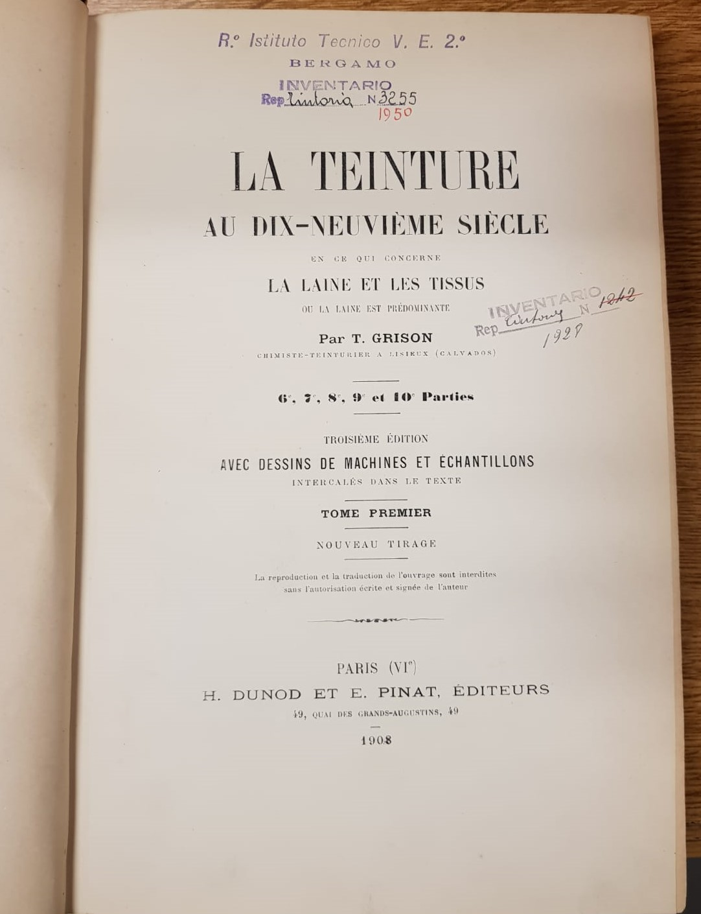
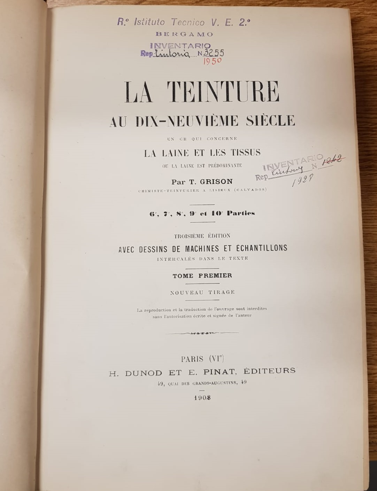

Descrizione archivio
Questa stanza si trova al terzo piano della palazzina tessile, essa è molto grande in quanto oltre ad essere una biblioteca è usata anche come laboratorio, usata soprattuto dal personale.
Descrizione oggetti
Entrando sulla destra vi era un armadio molto grande, sulla sinistra vi era uno scaffale, alto circa un metro, anch'esso gremito di vecchi libri scritti in molte lingue soprattutto francese e tedesco. Seguendo la parete di sinistra, si trova una libreria composta da un armadio diviso da diversi scaffali, all'interno di esso si trovano numerosi libri sull'argomento tessile.
Dal lato opposto si trova un'altra libreria contenenti numerosi volumi donati alla scuola dalla ditta Legler.
 
